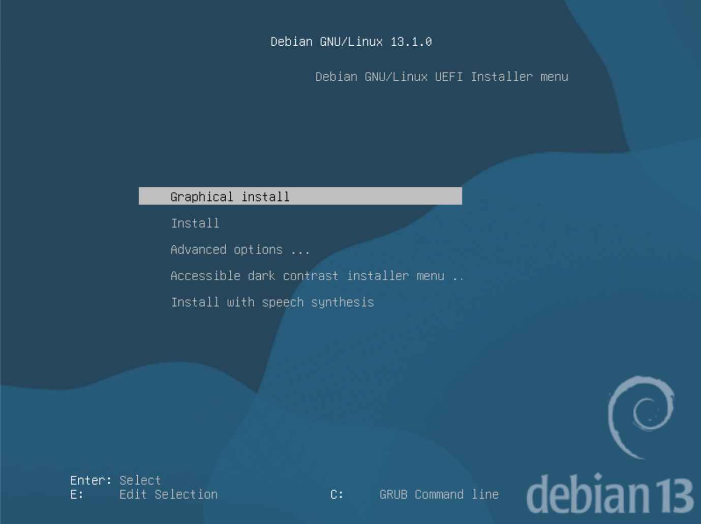
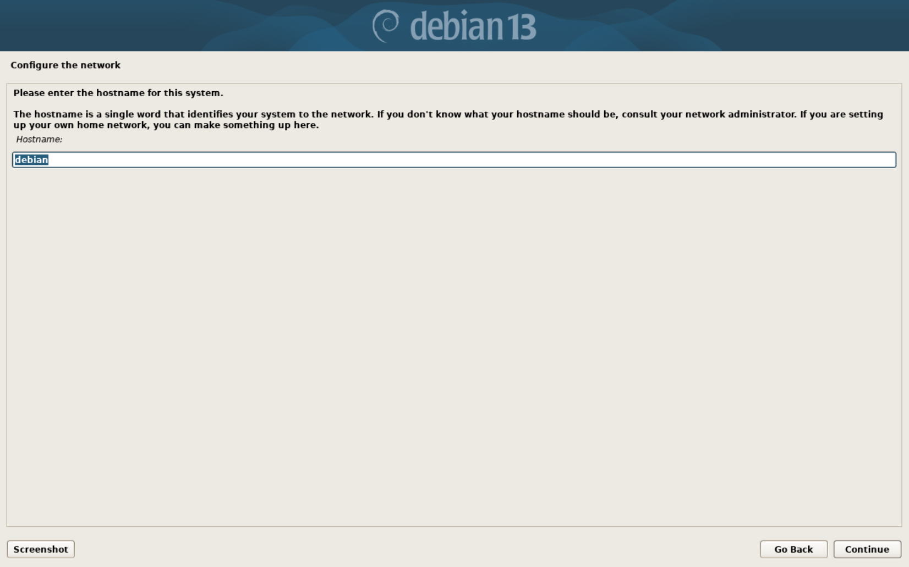
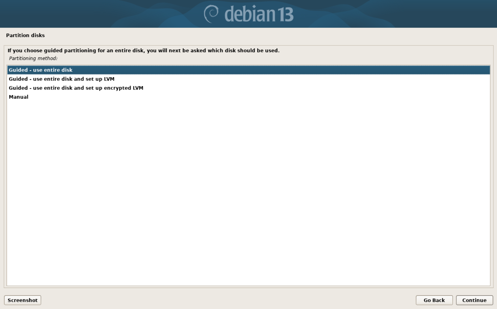
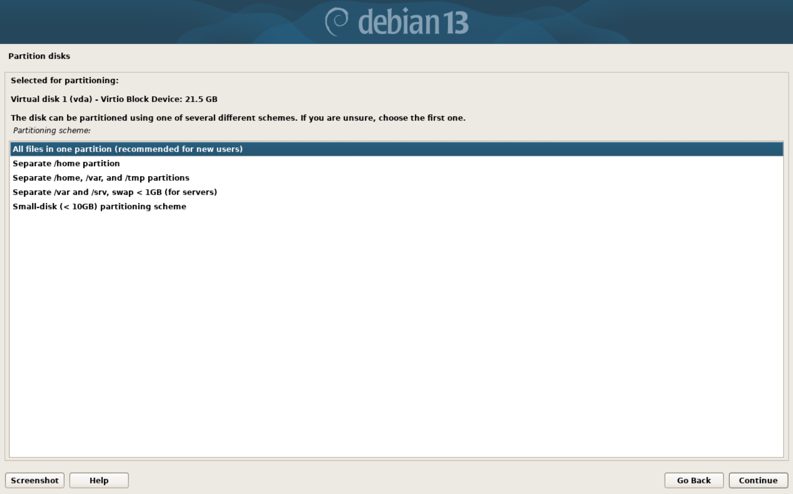
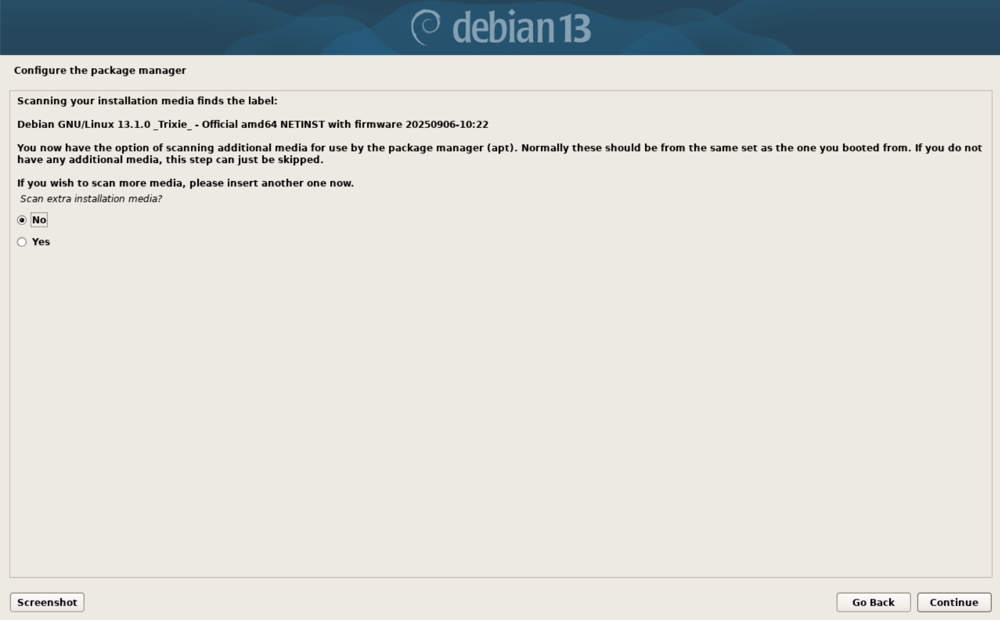
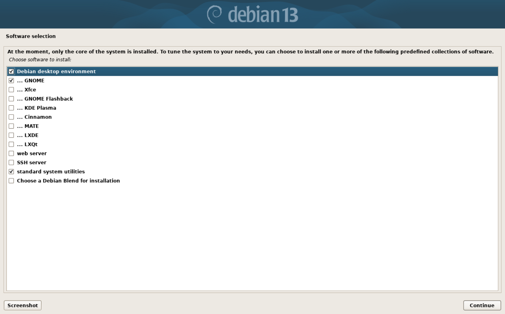
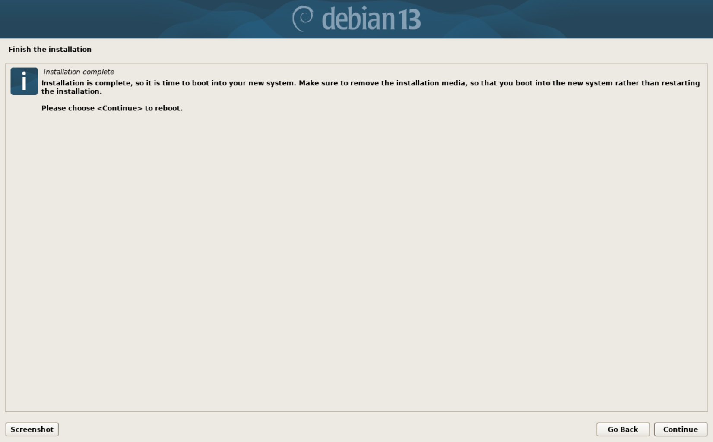
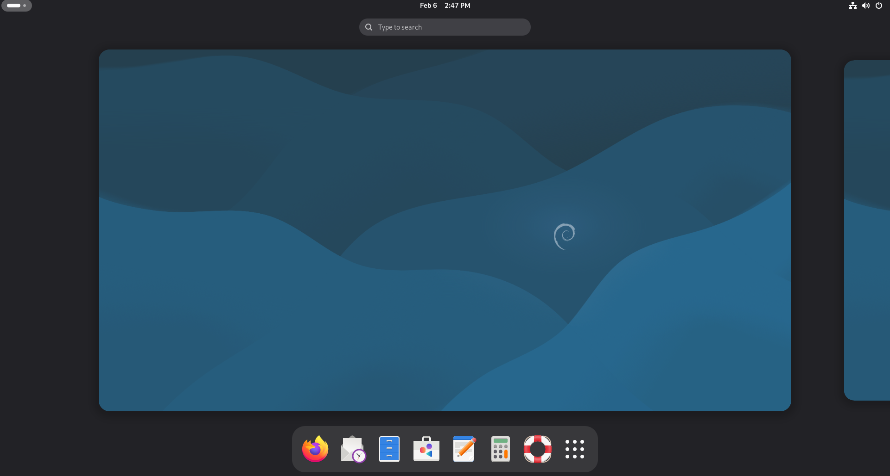

Go to https://www.debian.org/ to get your Debian ISO.
While you are waiting, go to https://etcher.balena.io/ to download the tool that we will use to flash the USB drive to make it bootable. Just download the version for your system.
I use something called Ventoy to boot multiple ISO files on a single USB stick, and I find it very convenient. If this sounds like something you would find useful, take a look at the docs here: https://www.ventoy.net/en/index.html
Now once you have both your flashing tool and the ISO downloaded, you can flash your USB stick. Note that this will erase everything on it, so don't blame me for any data loss. You have been warned.
 Now all you have to do is insert your USB, open up Etcher, select the ISO file, select your USB drive, and flash it! It should just take a few minutes. Once it is done, we are ready to move on to the next step: booting into the live environment.
Now all you have to do is insert your USB, open up Etcher, select the ISO file, select your USB drive, and flash it! It should just take a few minutes. Once it is done, we are ready to move on to the next step: booting into the live environment.
Once your ISO is flashed, make sure that the target computer is shut down, then take a look at the manual or online documentation (or Reddit, Reddit works too) to find what key you have to spam to get into the BIOS. This part varies for every system, so just look up "how to enter bios on [x device]" and "how to select boot device on [x device]". This part isn't hard, but I can't give instructions for every system ever, because that would be stupid.
Now assuming that you have figured out how to boot off of the USB, you should see the Debian boot screen and enter the install environment! Just press enter while "Graphical install" is highlighted.  The installation process will begin with things like your country, keyboard layout, and language. It will ask for a system hostname; you can choose whatever you want.  It will then ask for a domain name. You can just leave this blank. Next, set up a root password, username display name, actual username (I usually put "user" for simplicity, but you can do whatever you want). After this, you should be able to figure else what to set up. I'll meet you when you get to setting up partitions.  Here, select "Guided - use entire disk". This will use your entire drive and erase everything on it, including other operating systems. Again, I am not responsible for any data loss. If you want to dual-boot your current OS and Linux, choose the manual option and set up partitions that way.  Choose "Seperate /home partition". This will put your root and home directories on seperate partitions, which makes switching distros very easy with little data loss. Then, write changes to disk. If everything goes well, Debian should be installing itself on your system!  You may see the wierd screen pictured above during installation. I have never encountered this screen during installation on actual systems, but this happened while I was installing on a virtual machine. You can just select No. I'm pretty sure that this screen is netinstall-specific, so unless you got the netinstall version of the ISO, you shouldn't see this screen.
After that, just go through setting up the package manager if it prompts you to do so (also probably a netinstall thing, but I don't really remember. It's just 2 screens anyway).  It will then ask you which Desktop Environment you want to install. The default is GNOME if you want that; if not, uncheck it and select another (you can refer back to part 1 for a rundown on the available desktop environments. My personal favorite is KDE Plasma, but choose what works best for you). It is reccomended to keep "standard system utilities" selected. For this guide, I will be keeping the default GNOME selection. Remember that you can always switch this out later.  Once you see the screen pictured above, Debian has installed! Just click "Continue" to reboot. Be sure to remove the USB stick right after the screen goes black. 
The GNOME DE in Debian.
Great, you just got Debian working! Now the Debian and Fedora guide reconverge. Click here to go to the conclusion page.